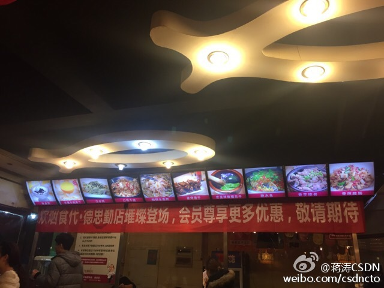
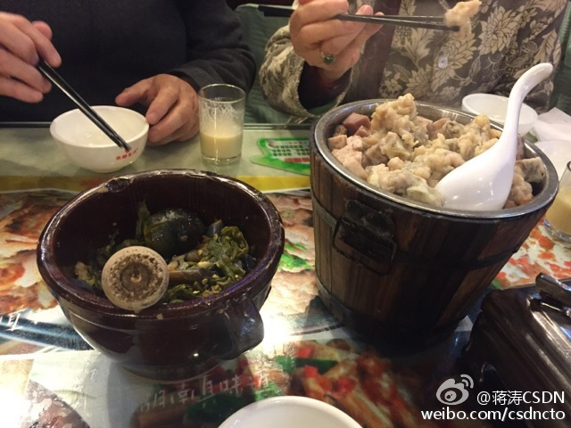

健身群里某人的推荐，还说这个牌子的运动耳机便宜，就买个试试。对我来说一点也不便宜，因为我对耳机的心理价位就是30-50元。 yurbuds yurbuds INSPIRE 100 FOR WOMEN入耳式运动耳机跑步健身
回复@难得优雅:你是土豪...... //@难得优雅:加一个0都不算贵的耳机，也不大可能是好耳机@Ada李力:健身群里某人的推荐，还说这个牌子的运动耳机便宜，就买个试试。对我来说一点也不便宜，因为我对耳机的心理价位就是30-50元。 yurbuds yurbuds INSPIRE 100 FOR WOMEN入耳式运动耳机跑步健身
#姣姣#听我扯东扯西，忽然问：“妈妈，你是不是不喜欢没有想法的人？”我说是。她又问：“你认识的人中间有这样的人吗？”。我想了想，其实人或多或少都有些想法，就说：“妈妈最近来往的人都有自己的想法，不过妈妈是最有想法的！”。姣姣说：“有想法还要能做到呀！”。
被闺女噎了一下子， 但她说得挺对的。我夸奖她说得精辟后，再补充说：“理论要能指导实践，不然都是空谈”@Ada李力:#姣姣#听我扯东扯西，忽然问：“妈妈，你是不是不喜欢没有想法的人？”我说是。她又问：“你认识的人中间有这样的人吗？”。我想了想，其实人或多或少都有些想法，就说：“妈妈最近来往的人都有自己的想法，不过妈妈是最有想法的！”。姣姣说：“有想法还要能做到呀！”。
谢谢知音哈。@tengda365:网页链接 @Ada李力 读《女人明白要趁早》的赶脚，很赞。做微商的所有女孩都该读读。这句牛：“谈恋爱的条件，就是让自己从精神到物质，从灵魂到肉体，因为有了对方都比以前的状态要好，否则何必呢？”本博主前所未有的关注渴望独立的女孩们的身心健康。。。
#创业#之前我遇到不信守承诺的人总是要冒光火，觉得人怎么能这样呢？但是现在遇到这类事情时越来越平和，要紧的是赶紧找替补把事情做完，而不是纠结愤怒在那个人为什么不靠谱。不靠谱的人很多，生气不过来的。首先自己要做个靠谱的人，这样你才能结识越来越多靠谱的人。
#创业#过程也是个攒信用的过程。在互联网降低信息流通的门槛后，信用价值会凸显。以往依靠坑蒙拐骗来赚钱的方式和手段，会越来越少，因为这直接带来信用成本上升。还没意识到信用成本的商人要好好想想，不是人工，材料，房租这些的才是成本。
我一直不明白为什么讨价还价会成为一种乐趣，也因此一向不善于此。对淘宝这类电子商务网站，我最喜欢的就是再不用讨价还价了。用好搜索和比价，完全可以筛出符合自己需求，价位合适的东东，而不是花上很多时间和口水去向商家磨，要更低的价格。
因为要安装洗碗机需要改装水路，我通过@赶集网 找了一个住处附近的小家装公司，上门后，先开始报价650，然后350，然后降到200。对于习惯互联网透明价格的我来说，相当不适应，最后没用他。直接打@史密斯热水器 的售后电话约了正派厂家的安装人员上门。
其实作为小公司来说，做好生意一定要有比大厂家突出的地方。这家小家装公司还是用那种忽悠一个算一个的做生意思路，估计也就会一直保持在在三个人两条枪的规模。看介绍，他做这行这样有十年了呢。－ 干的时间长又如何？养成一身坏毛病，可能还不如刚入行的新手做得好。@Ada李力:因为要安装洗碗机需要改装水路，我通过@赶集网 找了一个住处附近的小家装公司，上门后，先开始报价650，然后350，然后降到200。对于习惯互联网透明价格的我来说，相当不适应，最后没用他。直接打@史密斯热水器 的售后电话约了正派厂家的安装人员上门。
不能同意更多。//@王潇_潇洒姐: 有能力、有方法按自己的意愿过一生。 //@小V:说得对 //@严锋:说得太好了。//@罗永浩: 异常正//@二逼瓦西里:三观正---:抱歉，作者已设置仅展示半年内微博，此微博已不可见。
前几个月一直做家庭主妇，时不时就会吐下槽，抱怨一番。#姣姣#有天问我：“之前都是爸爸做家务，他怎么就不抱怨呢？”。这个问题又让我想了想，然后回答姣姣：“因为做家务，对我来说是不得不的事情，没有选择，所以我会抱怨。而之前你爸爸是主动选择了在家”。－ 我对自由的定义就是能够选择。
这也是企业总想搞自己官网的原因，知道应该把用户和流量把握在自己手里，但互联网胜者通吃的逻辑压倒一切。不过餐厅这种商业还好些，熟客和回头客就可以把业务支撑起来，苦的是那些做低频交易，2C的业务，一定会被流量巨头捏得死死的。@蒋涛CSDN:每家餐厅在期待美团，饿了吗大战带来的补贴和流量，就像出租司机还在期待滴滴和快的的补贴大战，他们不知道一旦互联网流量平台帝国形成，等待他们的就是淘宝众多小商家的命运，最好结果也就是个莆田系，免费的交易流量都会变成买路钱！ 
不知道为什么，#姣姣#奉行“谦虚使人进步，骄傲使人落后”这种相当落伍的思路。我于是在她面前要反其道而行之，经常表扬自己，比如：“妈妈我最厉害了”等等，而姣姣则是一贯的态度对待我这种表演，她的表情和眼神都在说一句话：“妈妈又在说大话”。 唉，我也不知道闺女怎么是这种脾性。
我更多的时候是夸奖姣姣，夸奖她的进步，夸奖她的努力，她听到夸奖还是会很开心，但是经常还会谦虚地加上一句：“其实我做得还不够好”。如果不是因为知道她的性情（姣姣一直觉得别人都挺好，而她自己有各种不足）我真以为学校又教出一个虚伪的家伙，@Ada李力:不知道为什么，#姣姣#奉行“谦虚使人进步，骄傲使人落后”这种相当落伍的思路。我于是在她面前要反其道而行之，经常表扬自己，比如：“妈妈我最厉害了”等等，而姣姣则是一贯的态度对待我这种表演，她的表情和眼神都在说一句话：“妈妈又在说大话”。 唉，我也不知道闺女怎么是这种脾性。
 yurbuds yurbuds INSPIRE 100 FOR WOMEN入耳式运动耳机跑步健身
yurbuds yurbuds INSPIRE 100 FOR WOMEN入耳式运动耳机跑步健身